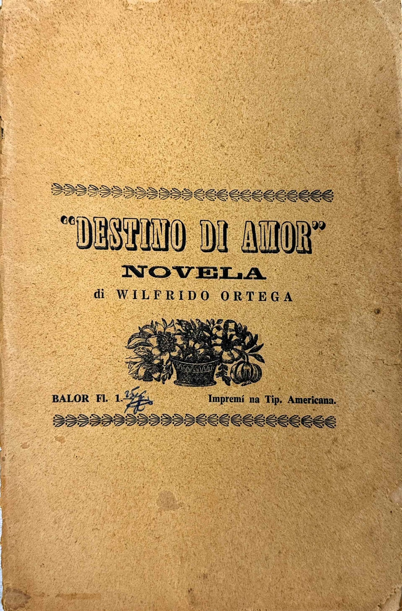
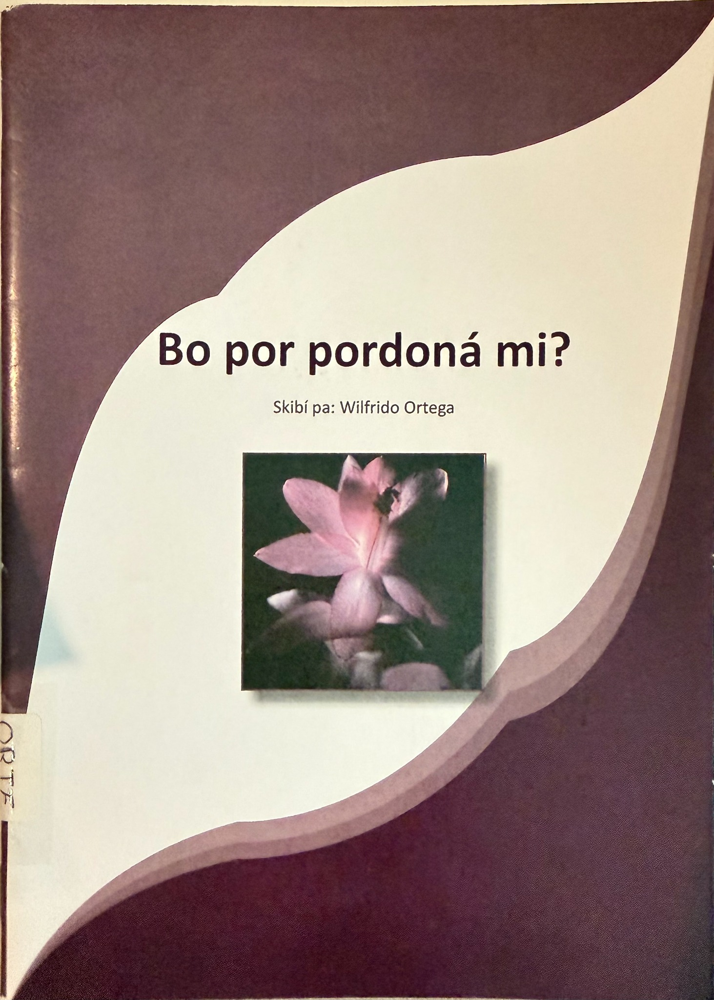

Su historia
Wilfrido Ortega 26 Oktober 1932 – + 26 Mei 2026
Komienso
“For di mucha mi tabata konta kuenta na entiero. Paden nan tabata resa i yora morto, mientras ku pafó e hendenan tabata distraí di tristesa ku mi kuentanan.”
— Wilfrido Ortega
Na 1958 Wilfrido Ortega a retirá for di refineria i a dediká su mes na skibi buki. E promé ku el a skibi i a duna enkargo pa laga imprimí serka Otto Zalm, a tarda asina tantu, ku e mes a disidí di kumpra aparatonan pa e por traha su mes bukinan. El a kumpra e.o. un mashin di type i di sténsel ku e sèn ku el a haña ora ku el a kita for di CPIM.
Titulonan konmemorativo
Destino di Amor (1960) · Bo por pordoná mi? (2007) · B’a kobra mi (2013)
E promé manuskrito di Destino di Amor ta’tin 500 pagina. Riba rekomendashon di Otto Zalm, a redusí e paginanan na sesenta pa baha gastu di imprenta. Na 2007, Wilfrido a selebrá 75 aña di bida i 50 aña ku e outor a kuminsá publiká. Pa e okashon aki, Kas di Kultura a presentá e buki Bo por Pordona mi. B’a kobra mi ta e último publikashon di Ortega. Den e buki tin indikashon ku esaki ta su di 168 titulo ku e ta publiká. E tres bukinan aki skirbí pa Wilfrido Ortega ku sigur otro hende a imprimí. Tur sobrá e mes a imprimí.


Aksesibildat di e material
Wilfrido a yega di bisa ku no tin niun di su klientenan ku tin tur su bukinan. Esaki ta konta tambe pa institutonan literario riba e tres islanan ku e outor a distribuí su bukinan. E bukinan publiká despues di 2008 ta mas aksesibel na e diferente institunan literario i kultural. Remarkabel ta, ku tin titulo ku ainda no a topa i ya kaba ta bisto ku ta den kolekshonnan privá tin mas posibilidat di hañanan.
Rekonosementu
“Loke pa e kritíko literario por parse na promé instante di poko balor òf inferior, por ta oro pa e historiadó literario.”
Tradukshon poetiko di Nifa Ansano pa un ekspreshon di Wim Rutgers.
Na 1990 e Fundashon Kinderen in aktie, presidí pa Guillermo Rosario a duna rekonosemntu na diferente baluarte, entrenan Wilfrido Ortega. E rekonosementu tabata pa nan aporte na komunidat.
Na 2007 Kas di Kultura Kòrsou tambe a duna homenahe na Wilfrido. Durante e enkuentro Drs. Richard Hooi a papia di su balor pa literatura papiamentu i Drs. Rene Rosalia su balor kultural. Cas di Cultura Aruba tambe a duna atenshon na Wilfrido.
Di Fundashon Arte di Palabra el a risibí un tapushi literario na 2008 komo baluarte pa idioma papiamentu. Pa su produktividat, el a risibí e premio literario Joseph Sickman Corsen di Biblioteka Nashonal Kòrsou na 2016.